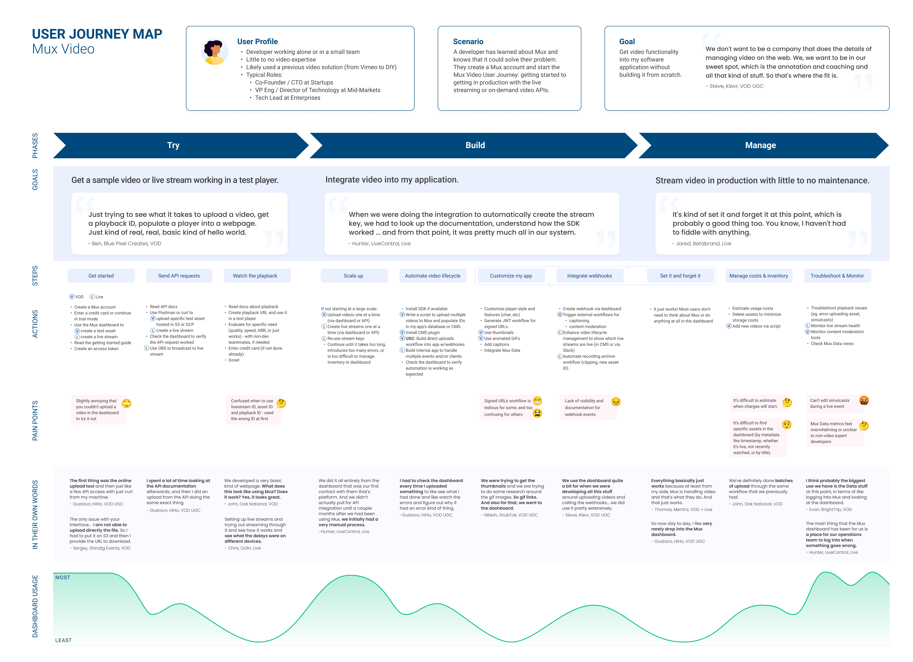

Project Details
Type: Journey Map Research, UXR
Company: Mux
Duration: Jun 2022 - Sept 2022
Team: 2 Product Designers
Tools: Figma, Gong, Dovetail, Airtable, Notion
Summary
The Mux Video user journey describes the developer experience of getting started to getting in production with the live streaming and on-demand video APIs. This journey starts when a developer creates an account and has a use case that Mux can solve. In other words, this does not include the process of finding Mux and learning what Mux does.
Products: 10 VOD, 3 Live, 1 Live + VOD
Archetypes: 5 Content, 3 Social Sharing, 3 Agencies, 1 Video & Live Event Platform, 1 Commerce, 1 Uncategorized
Company Size: 11 Startup, 4 Mid-Market, 1 Enterprise
Background
We interviewed developers who integrated Mux Video at 14 companies representing a variety of Mux Video products, archetypes, and company sizes. After categorizing 500+ data points from the interviews, we created a journey map that shows the goals, actions, and pain points in 3 phases: Try, Build and Manage.
We talked with 14 Mux Video users who first started using Mux between August 2020 and November 2021. The majority of research participants used Mux for on-demand video (VOD), and 3 of those were specifically user-generated content (UGC). Not illustrated: 9 participants have integrated Mux Data, but not all are using it regularly.
Key Takeaways
- Playback outside the dashboard is a universal step for Live and VOD users in the Try phase. After trying out the API, users want to see the playback in a player, whether it's in an HTML page with the <video> tag or in their app in a test environment.
- Developers use both the dashboard and the API (via Postman and curl primarily) when getting started. They skip the SDK installation until they've decided they're moving forward with Mux. One exception to this is VOD UGC use cases where the developer starts building the full integration as the POC.
- Differences between Eager and Discerning developer types applied mostly to the Try phase. Eager developers have basic requirements to stream video and make a quick decision to use Mux. Discerning developers have specific requirements of the API, and want to improve on a prior implementation with video.
- Some Live and VOD customers continue to use the dashboard to create assets and live streams manually until they have to scale up. When the scale gets too much to manage - too many assets, too many clients that require unique live streams or too many events that require asset (DVR) management - developers will build tools with the API.
- In the Build phase, Live and VOD users typically get a simple workflow in place first, and add more features and webhooks later.
- When using the API and/or webhooks, developers use the dashboard to confirm that assets and live streams and related events are being created and updated as expected.
- Mux Data metrics feel overwhelming or unclear to developers and they don’t expect to get value from data until they have more usage.
- Mux Video users are most interested in Mux Data engagement metrics.
- In the Manage phase, developers often don’t need to think about Mux because it just works. Billing, adding or deleting videos, and troubleshooting are the main reasons folks would have to think about and manage their Mux videos.
Synthesis
As a team, we tagged, affinitized, and analyzed the interviews through Dovetail from over 500+ highlights into themes.
Final Journey Map Deliverable
The final design went through several iterations to get to this stage. Unfortunately previous iterations were lost during a sudden RIF that I can only describe them as infinite flowcharts.

Below, dashboard usage represents if customers had been utilizing Mux Dashboard as a front-end instead of purely relying on the API.
Try Phase
The Try phase is all about getting a sample video or live stream working in a test player as a simple proof of concept.
Insights
- Playback outside the dashboard is a universal step for Live and VOD users in the Try phase. After trying out the API, users want to see the playback in a player, whether it's in an HTML page with the <video> tag or in their app in a test environment.
"I was just trying to test out the service, be able to kick around the API, see what it takes to upload a video, get a playback ID, you know, populate a player into a webpage. Just kind of real, real, basic kind of hello world.”
- Director of Technology Operations, Blue Pixel Creates
- Developers use both the dashboard and the API (via Postman and curl primarily) when getting started. They skip the SDK installation until they've decided they're moving forward with Mux.
- Asset limits in trial mode, or entering a credit card, weren't big sources of friction.
- Creating an asset in the dashboard is useful for both eager and discerning developers.
- Creating an access token was straightforward, though one person said it was “fairly hidden”
- Developers reference guides in docs when they're getting started.
Build Phase
In the Build phase, developers are working on the player, ingest, and CMS/database setup all at the same time. They need to get it all working so that it’s ready for production.
Insights
- In the Build phase, Live and VOD users typically get a simple workflow in place first, and add more features and webhooks later.
- VOD customers may use the API to write a script to upload assets to Mux and populate their CMS or database with the metadata. They may have a CMS integration that handles this for them.
- VOD customers managing UGC need to set up a direct uploads workflow in their application.
"We focus on relatively short chunks of video because it's specific events in a sporting context, like a typical example of what a lot of people use it for right now is golf swings. Right? So a golf swing is, you know, 10 seconds of video if you slow it down and maybe it's 30 seconds, but it's not 20 minutes. So the chunk upload, if we were uploading longer videos. Absolutely. We would definitely take advantage of that, but just so far anyway, because of the fact that we're dealing with relatively short videos that are probably like a few hundred megabytes each typically, and, you know, in north America, at least the bandwidth is sufficient for the majority of people that it's it. We just haven't had a need to use [upchunk].” - CTO, Klevr
- Live stream customers may build an internal tool to create live streams and update their system with the relevant details, or it may be an automated workflow to get the asset IDs from the live stream recordings.
"So it was one call we needed to copy down when a client was activated, we needed to give them their live stream IDon Mux. We would then submit that information into our dashboard, so that that was available to our operations team. And we also needed to add the stream key to the account so that our encoder knows what to stream to. And then the only other piece of information we needed to get was taking that live stream ID and passing that to our web player backend so that when that live stream was active, that client's web player would start. Essentially, that part of the process was quite easy.”
- VP Engineering, LiveControl
- Some Live and VOD customers continue to use the dashboard to create assets and live streams manually until they have to scale up. When the scale gets too much to manage - too many assets, too many clientsthat require unique live streams or too many events that require asset (DVR)management - developers will build tools with the API.
- When using the API and/or webhooks, developers use the dashboard to confirm that assets and live streams and related events are being created and updated as expected.
- Webhook workflows are usually added later, if at all, for a variety of use cases: enable external workflows for captioning and content moderation video lifecycle management - creating and updating IDs for assets and livestreams, and associated recordings.
- There is a wide variety of CMS tools and custom CMS implementations used across customers.
- Signed URLs are needed but not always used due to friction.
Manage Phase
The Manage phase includes anything a customer may have to do once their videos and live streams are being viewed in production: adding new videos, monitoring live stream health, troubleshooting playback issues with live streams or assets, content moderation, managing storage and usage costs, etc.
Support engineers and non-technical team members are likely to be involved in these workflows, although it is sometimes the same developer managing all aspects of the video.
Insights
- In the Manage phase, developers often don’t need to think about Mux because it just works.
”Everything basically just works because at least from my side, Mux is handling video and that's what they do. And that just works.”
- Tech Lead, Mentra,
- VOD customers periodically need to add new videos to Mux, either with their custom script, CMS, or less ideally, directly in the Mux dashboard.
- Customers might casually monitor costs, though most aren’t overly concerned
- Content moderation workflows still require ongoing monitoring
Aftermath
Findings were later presented multiples times across product design team, engineering org, and overall product org.
This led to an umbrella Platform Journey Research project to uncover the holistic intersectional workflows between Mux products.